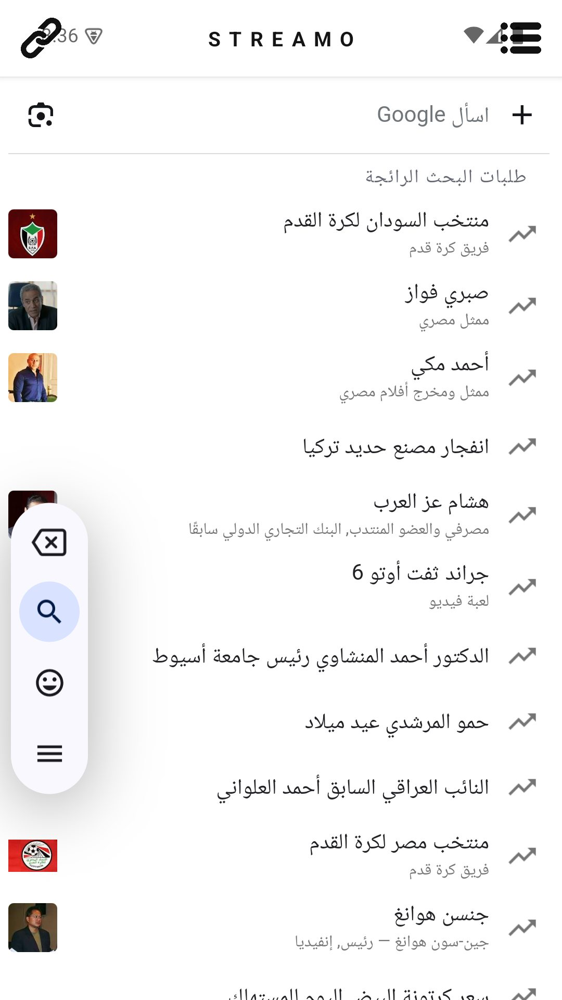

متصفح مدمج
ابحث وافتح مواقع المشاهدة جوّه التطبيق نفسه — من غير تطبيقات تانية.
Streamo بيستخرج الرابط المباشر لأي فيلم أو مسلسل من مواقع المشاهدة — تشوفه في أي مكان بدون إعلانات، أو تشاركه مع أصحابك متزامنين لحظة بلحظة على لايف سينما.
Portable · بدون تثبيت · النسخ الرسمية على GitHub Releases

من البحث عن الفيلم لحد لحظة التشغيل — Streamo غطي كل الطريق: فتح الموقع، التقاط الرابط، اختباره، تشغيله، ومشاركته.
ابحث وافتح مواقع المشاهدة جوّه التطبيق نفسه — من غير تطبيقات تانية.
الرابط المباشر للفيلم بيتمسك تلقائيًا من أي سيرفر تشغّل منه.
Streamo بيختبر الرابط المستخرج ويقولك على طول: شغال ولا باظ.
كل رابط اتسحب محفوظ في مكان واحد — ارجع لأي رابط وقتما تحب.
شوف مباشرة جوّه Streamo — أو افتح الرابط في Chrome أو أي مشغّل تفضّله.
بما إنك بتتفرج برا موقع المشاهدة، مفيش ولا إعلان بيقاطعك.
نفس التجربة بالظبط على الاتنين — نفس الشكل ونفس الخطوات.
73 MB نسخة بورتابل للويندوز من غير تثبيت، و4.4 MB APK للأندرويد.
الخطوات واحدة على ويندوز وأندرويد. اتبعها مرة واحدة — وهتفضل سهلة لآخر مرة.
اكتب مشاهدة فيلم <الاسم> اونلاين أو مشاهدة مسلسل <الاسم> اونلاين جوّه التطبيق — وتقدر تضيف اسم موقع في الآخر، أو تسيبها من غيره.
اختار أي موقع من النتايج — زي Top Cinema أو Cinema La Rosa أو أي موقع مشاهدة تاني.
اختار الفيلم أو الحلقة اللي عايزها واضغط Play زي ما بتعمل عادةً.
افتح كل سيرفر في الصفحة وشغّل الفيديو، كأنك هتتفرج عادي — Streamo بيراقب من غير ما يتدخل.
أول ما الفيديو يشتغل، نافذة بتظهر على اليمين فيها الرابط المستخرج وبتتختبر تلقائيًا.
اضغط عليه مباشرة، أو افتح أيقونة «الروابط المستخرجة»: التشغيل في المشغّل المدمج · الفتح في Chrome · Refresh لما تخلص صلاحيته.
| النتيجة | تعمل إيه |
|---|---|
| مظهرش رابط | جرّب سيرفر تاني أو موقع تاني |
| الرابط ظهر بس الاختبار فشل | جرّب سيرفر تاني أو موقع تاني |
| الرابط ظهر والاختبار نجح | اضغط عليه، أو افتح «الروابط المستخرجة» |
كل رابط مستخرج بينتهي بعد فترة — ده طبيعي. افتح «الروابط المستخرجة» واضغط Refresh عشان يتجدد، أو استخرج رابط جديد.

افتح Streamo، واكتب في البحث الجملة المناسبة، واختار أي نتيجة تطلع — الباقي على Streamo. انسخ الجمل جاهزة بالمثال:
تقدر تضيف اسم موقع في آخر الجملة — أو تسيبها من غيره، النتايج هتظهر برضه.
مشاهدة فيلم <اسم الفيلم> اونلاينمشاهدة مسلسل <اسم المسلسل> اونلاينمشاهدة فيلم <الاسم> اونلاين top cinemaلايف سينما منصة مجانية على الويب للمشاهدة الجماعية المتزامنة: تنشئ غرفة مشاهدة، تشارك اللينك، وكل المشاركين بيتفرجوا نفس الثانية من الفيلم في نفس الوقت — مع دردشة حية، ومن غير أي تسجيل دخول.
المشاهدة مع الأصحاب أونلاين كانت المشكلة فيها إن كل واحد يشوف ثانية مختلفة، وتحس إنكم مش متفرجين مع بعض. لايف سينما بيعيد تجربة «يلا نروح سينما» كاملة على الإنترنت: الكل بيشوف نفس اللحظة، بيتكلم، بيضحك، وبيعلق — وأي تغيير في المشغّل (تشغيل، إيقاف، تنقّل، إعادة) بيتطبق لحظيًا على الجميع حسب صلاحيات الغرفة.
Streamo هو الجسر بين العالمين: تستخرج الرابط المباشر من مواقع المشاهدة، تحطه في غرفة لايف سينما، وتشارك رابط الغرفة مع أي حد — وتتفرجوا سوا، نفس الثانية، من غير إعلانات.الفكرة والتنفيذ — X5Coder
الكل بيشوف نفس الثانية — التشغيل والإيقاف والتنقّل وإرجاع الفيلم من البداية بيتطبق على الجميع لحظيًا.
مفيش حساب ولا إيميل ولا باسورد — هويتك وبياناتك بتتحفظ تلقائيًا على جهازك وترجع بنفس الشخصية.
رسائل وإيموجيز ورد وتعديل وحذف ونسخ وعلامات قراءة — بأسلوب واتساب وتيليجرام جوّه غرفة المشاهدة.
صاحب الغرفة يقرر مين يتحكم في المشغّل: الكل، الأدمنز بس، أو هو بس — وبيتطبق فورًا على الجميع.
أوضة عامة لأي حد، أو خاصة بكلمة مرور رقمية من ٤ إلى ٦ أرقام — تتحكم مين يدخل.
صاحب الغرفة يغيّر الرابط في أي وقت — الكل يتنقل تلقائيًا للفيلم الجديد من البداية، من غير غرفة جديدة.
رسالة ترحيب تظهر لأي مشاهد يدخل فيها القواعد، + إعلان مثبّت يشوفه الجميع طول الوقت.
عدّاد فوق أيقونة الرسائل ونقطة خضراء متوهجة — وتقدر تنبه أي مشاهد محدد بضغطة دبل على صورته.
تعديل كل بيانات الغرفة، تعيين وإزالة أدمنز، التحكم في المشاهدة والدردشة، حظر أو طرد أي حد، وحذف الغرفة نهائيًا.
MP4 أو HLS (.m3u8) أو روابط فيها توكن وصلاحية مؤقتة — القاعدة الوحيدة: لو اشتغل في Chrome، هيشتغل في لايف سينما.
أداة بتستخرج الرابط المباشر لأي فيلم أو مسلسل من مواقع المشاهدة — عشان تقدر تشوف أي محتوى في أي مشغّل أو متصفح من غير إعلانات، أو تشاركه مع أصحابك متزامنين على لايف سينما.
أيوه — مجاني بالكامل على ويندوز وأندرويد. مفيش اشتراكات ولا نسخة مدفوعة ولا ميزات مقفولة.
لا، خالص. Streamo مش مستضيف محتوى ولا بيمرره — هو بس بيستخرج روابط من مواقع إنت بتقرر تزورها. مسؤوليتك عن طريقة استخدامك للروابط وعن احترام حقوق الملكية الفكرية.
كل رابط مباشر بينتهي بعد فترة — ده طبيعي بسبب الروابط المؤقتة والتوكنز. الحل بسيط: افتح «الروابط المستخرجة» واضغط Refresh عشان يتجدد الرابط، أو استخرج رابط جديد من نفس المصدر.
جرّب سيرفر تاني في نفس الصفحة، أو موقع مشاهدة تاني من نتايج البحث، وحاول تاني. القاعدة: رابط يختبر ناجح = رابط يشتغل في أي مشغّل وفي لايف سينما.
لا في الاتنين. مفيش تسجيل ولا إيميل ولا باسورد أبدًا. في لايف سينما، هويتك وبياناتك بتتحفظ تلقائيًا على جهازك — وحتى لو خرجت ورجعت تلاقيك بنفس الشخصية ونفس البيانات.
أي رابط مباشر بيلعب جوّه Google Chrome: MP4 أو HLS (.m3u8) أو روابط فيها توكن وصلاحية مؤقتة. روابط صفحات المشاهدة العادية مش هتشتغل — الخطوات في القسم ده هتوصلك لرابط شغال.
الإصدار 2.0.1 لجميع المنصات — النسخ الرسمية وبصماتها على GitHub Releases فقط.
نسخة بورتابل · بدون تثبيت · 73 MB

ملف APK · 4.4 MB · فعّل «التثبيت من مصادر غير معروفة»
Streamo لا يستضيف أي محتوى — هو فقط يستخرج روابط من مواقع إنت بتقرر تزورها. مسؤوليتك عن طريقة استخدامك للروابط. النسخ الرسمية بتتنشر على GitHub Releases فقط.